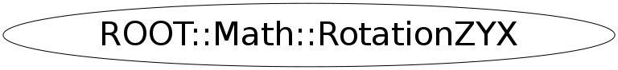

class ROOT::Math::RotationZYX
Rotation class with the (3D) rotation represented by
angles describing first a rotation of
an angle phi (yaw) about the Z axis,
followed by a rotation of an angle theta (pitch) about the new Y' axis,
followed by a third rotation of an angle psi (roll) about the final X'' axis.
This is sometimes referred to as the Euler 321 sequence.
It has not to be confused with the typical Goldstein definition of the Euler Angles
(Z-X-Z or 313 sequence) which is used by the ROOT::Math::EulerAngles class.
@ingroup GenVector
Function Members (Methods)
public:
private:
| static double | Pi() |
Class Charts
{kind=link}
{kind=link}
{kind=link}
{kind=link}

Function documentation
RotationZYX(ROOT::Math::RotationZYX::Scalar phi, ROOT::Math::RotationZYX::Scalar theta, ROOT::Math::RotationZYX::Scalar psi)
Constructor from phi, theta and psi
{Rectify();} RotationZYX(IT begin, IT end)
Construct given a pair of pointers or iterators defining the
beginning and end of an array of three Scalars, to be treated as
the angles phi, theta and psi.
{ SetComponents(begin,end); }void Rectify()
The compiler-generated copy ctor, copy assignment, and dtor are OK.
Re-adjust components place angles in canonical ranges
RotationZYX & operator=( OtherRotation const & r )
Assign from another supported rotation type (see gv_detail::convert )
void SetComponents(double* begin, double* end)
======== Components ==============
Set the three Euler angles given a pair of pointers or iterators
defining the beginning and end of an array of three Scalars.
void GetComponents(IT begin, IT end)
Get the axis and then the angle into data specified by an iterator begin
and another to the end of the desired data (4 past start).
void GetComponents(double* begin) const
Get the axis and then the angle into data specified by an iterator begin
void SetComponents(ROOT::Math::RotationZYX::Scalar phi, ROOT::Math::RotationZYX::Scalar theta, ROOT::Math::RotationZYX::Scalar psi)
Set the components phi, theta, psi based on three Scalars.
return ! operator==(rhs)
RotationZYX operator*(RotationX const & r1, RotationZYX const & r2)
Multiplication of an axial rotation by an AxisAngle
RotationZYX operator*(RotationY const & r1, RotationZYX const & r2)
RotationZYX operator*(RotationZ const & r1, RotationZYX const & r2)